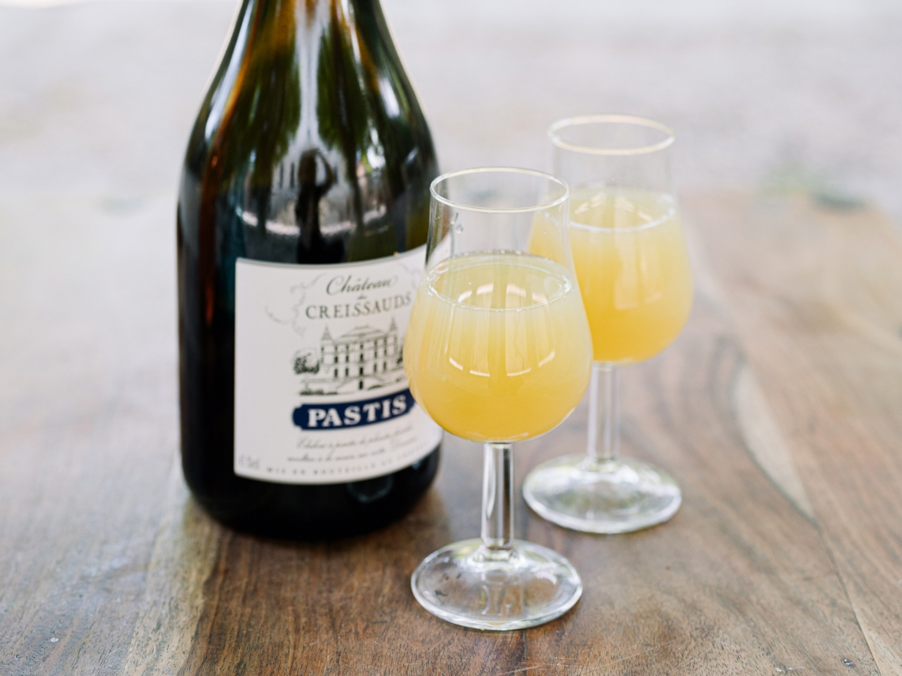
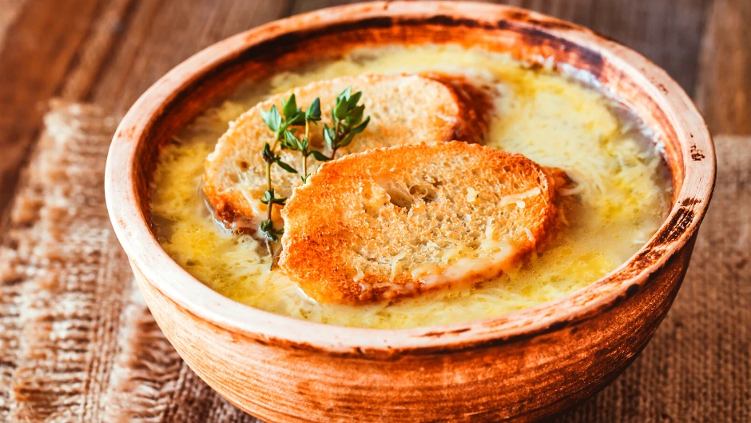
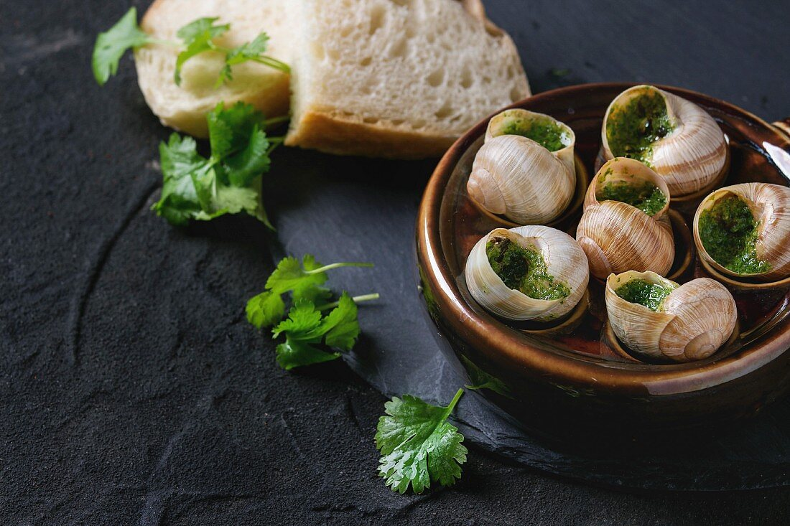
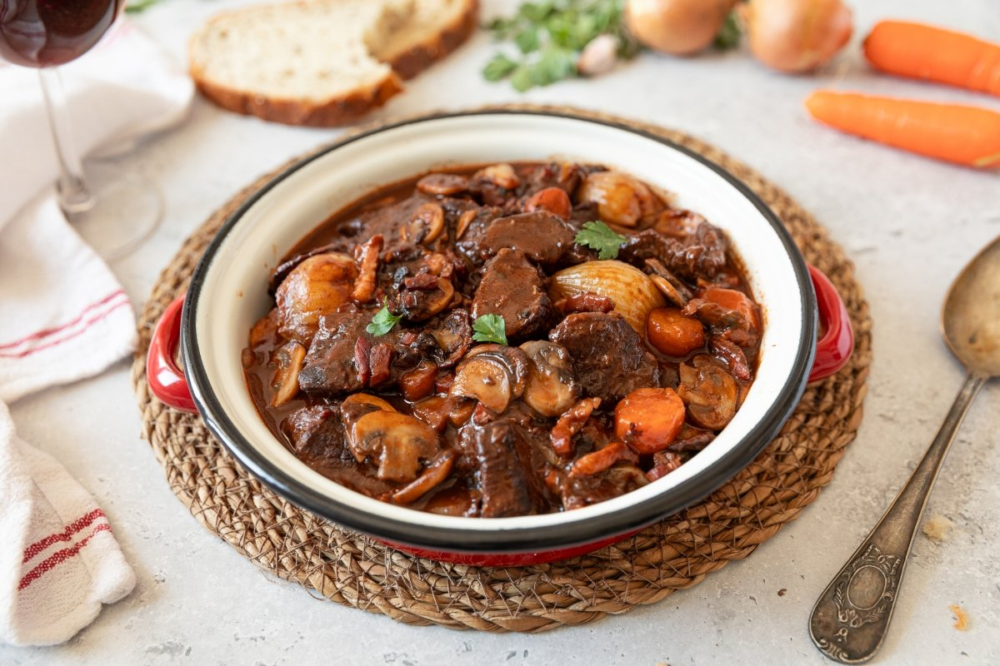
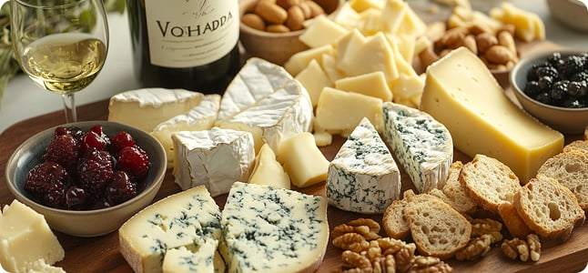
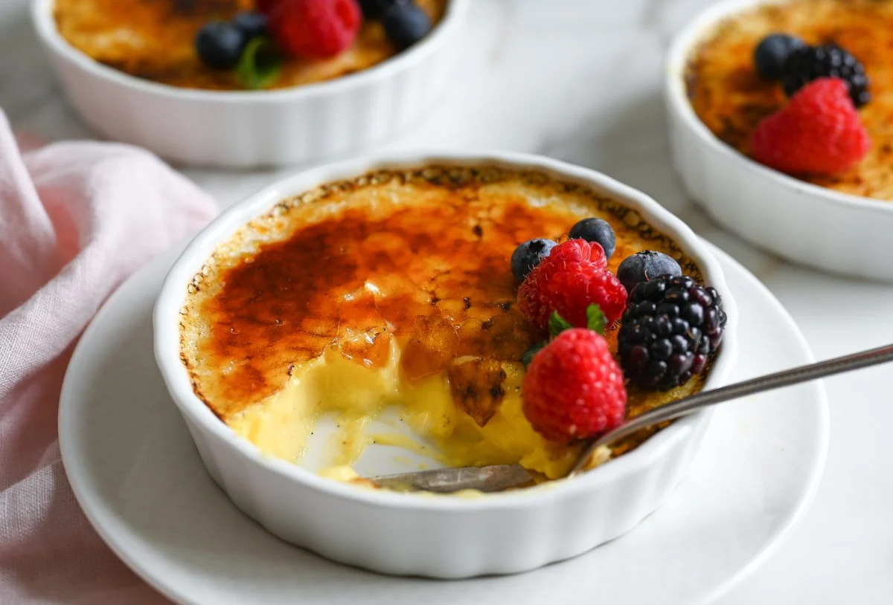
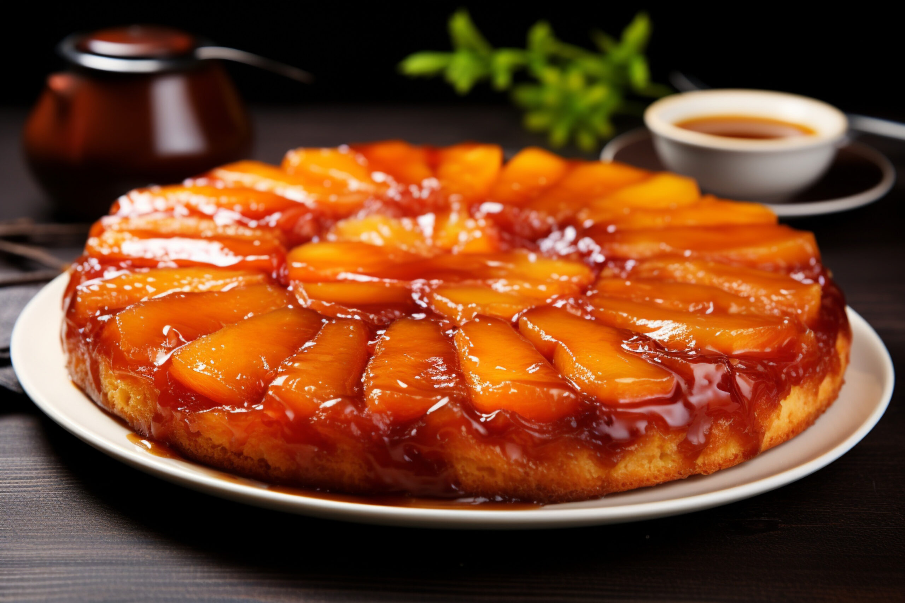
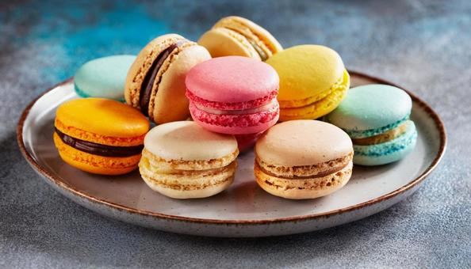
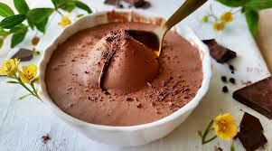

Klasszikus francia lecsó friss padlizsánnal, cukkinivel, paprikával és paradicsommal, fűszeres paradicsomszószban lassan párolva. Tökéletes könnyű, vegetáriánus fogás.
Tiramisu
Krémes mascarpone, eszpresszóval átitatott piskóta és kakaópor, egy klasszikus édesség, ami minden falatnál a mennyországba repít.
Friss és elegáns koktél, mely a prémium pezsgő és a gazdag feketeribizli likőr tökéletes harmóniájával varázsol el. Egy igazi ünnepi ital, amely a gyümölcsös ízek és a buborékok frissítő eleganciájával ad igazi luxusélményt minden kortyban.
8€
Pastis (ánizsos aperitif)

Francia ánizsos aperitif, amelyet vízzel hígítva, jéggel fogyaszthatnak. Frissítő, gyógynövényes ízvilága tökéletes étkezés előtti ital.
10€
Soupe à l’Oignon

Klasszikus francia hagymaleves, ropogós sajtos pirítóssal
8€
Escargots de Bourgogne

Vajban és fokhagymában sült burgundi csigák
14€
Foie Gras
Libamáj terrine házi briós és fügés chutney kíséretében
14€
Salade de Chèvre Chaud
Meleg kecskesajtos saláta dióval és mézes-mustáros öntettel
12€
Boeuf Bourguignon

20€
Coq au Vin
Borban párolt csirke gombával és gyökérzöldségekkel
18€
Ratatouille
Provence-i zöldséges egytálétel (vegán)
12€
Filet de Bar à la Provençale
Tengeri sügér friss fűszernövényekkel és grillezett zöldségekkel
14€
Camembert, Roquefort, Comté, Brie, friss baguette és szőlő

Ez a válogatás a krémes Camembert, a lágy Brie, a karakteres Roquefort és a diós ízű Comté sajtok tökéletes kombinációja. Friss baguette és édes szőlő kíséretében tálalva, egy igazi francia ínycsiklandó élményt kínál.
22€
kaja
kaja
Crème Brûlée
kaja

Klasszikus vaníliakrém karamellizált kajacukorréteggel
8€
kaja
kaja
Tarte Tati

Fordított almatorta karamellizált almával
6€
Macaron Assortiment

Színes és ínycsiklandó macaronválogatás
10€
Mousse au Chocolat

Selymes francia csokoládéhab
4€
Francia borválogatás (Bordeaux, Burgundy, Loire)
Fedezze fel Franciaország borvidékeinek egyedülálló ízvilágát! Válogatásunk a régió legjobb borait tartalmazza